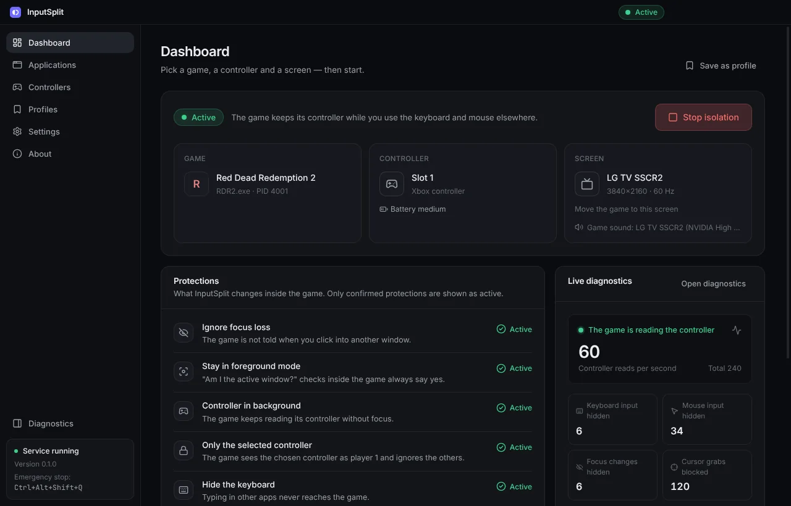
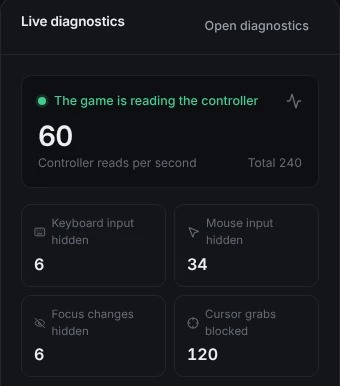
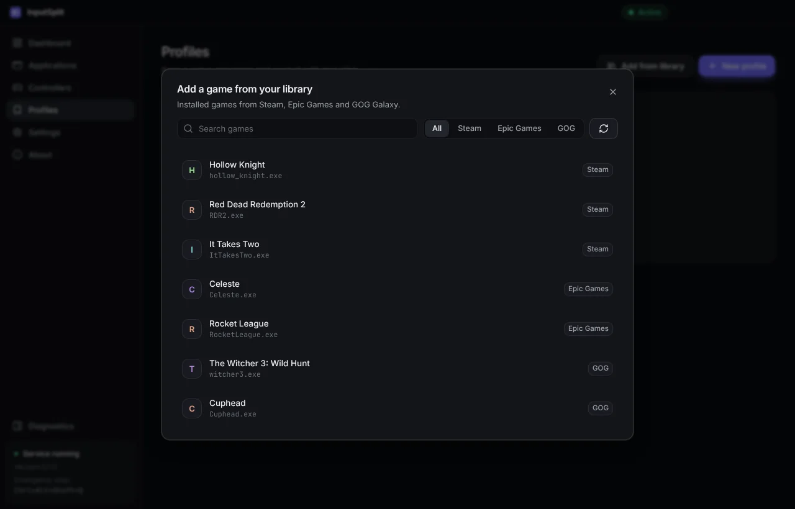
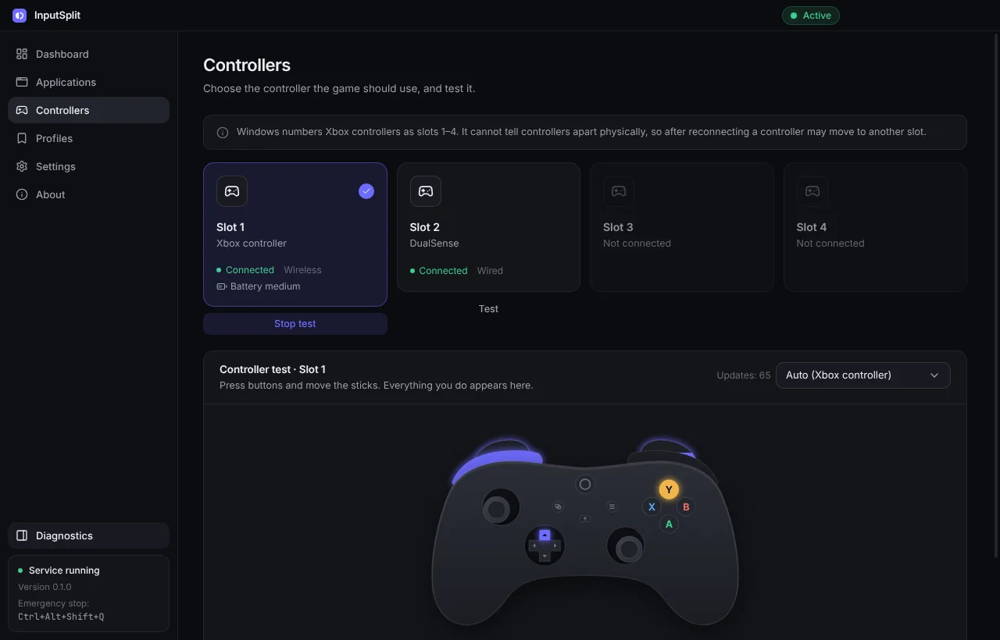
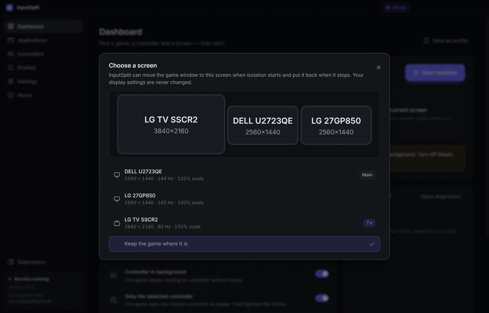
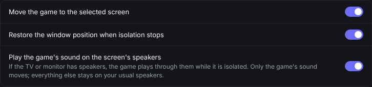
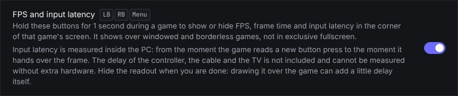
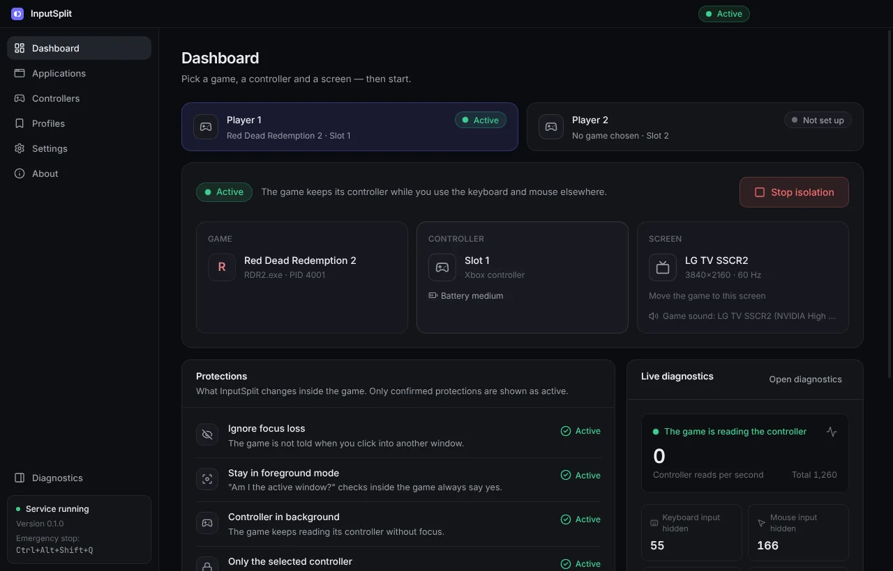
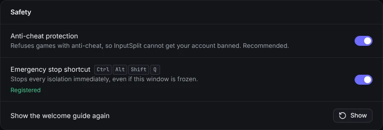

One PC, two people.
One plays, one works.
InputSplit lets someone play on the TV with a controller while someone else keeps working on the same Windows PC with the keyboard and mouse. The game keeps running in the background and never pauses.
- MIT license
- 11 languages
- No administrator rights
- Updates itself

Sound familiar?
The game pauses when you Alt+Tab or click on another monitor.
The controller stops working as soon as the game window is not focused.
The game reacts to your typing and mouse clicks in another app.
You want one person on the couch and another at the desk, on one computer.
InputSplit fixes all of this inside the game you choose, and only there.
Everything you need to share one PC
Pick the game, pick the controller, press Start. The rest happens by itself.
The game keeps playing when you click away
Click into your browser, switch monitors, Alt+Tab as much as you like. The game on the TV keeps running and keeps listening to its controller.
- The controller keeps working in the background
- The game is never told another window became active, so it does not pause or mute
- Your typing, mouse movement and clicks never reach the game
- The game cannot re-centre or trap the shared mouse pointer

Your games, one click away
No hunting for .exe files. InputSplit finds the games installed through Steam, Epic Games and GOG Galaxy.
- Add a game from your library and save it as a profile
- Play starts the game and isolates it as soon as its window appears
- Or isolate a game automatically whenever it opens
- The picker marks launchers, online games and games that worked before

Any gamepad, locked to its game
The controller you pick becomes the game's player 1, and the game ignores every other pad. Test the buttons and sticks right in the app.
- Xbox and other XInput controllers, DirectInput and HID gamepads
- Live controller test with artwork for your model
- Battery level at a glance
- Works with 64-bit and 32-bit games
- PlayStation and Switch Pro controllers show up as an Xbox controller, no drivers
- Dead zones for stick drift and button remapping
- Controller as keyboard for games without gamepad support

The right screen, the right speakers
InputSplit can move the game to the TV when isolation starts and put it back afterwards. Your monitors stay exactly as they were.
- Pick the TV on a map of your screens
- If the TV has speakers, the game's sound plays there
- Only the game's sound moves: your calls and music stay on your speakers
- Everything goes back when you press Stop


FPS and input latency, right on the TV
Hold LB + RB + Menu for a second during a game to show or hide a small readout in the corner of the game's screen.
- FPS, frame time and the worst frame
- Input → frame latency: from the game reading a button press to handing over the frame
- Shows over windowed and borderless games
- Measured inside the PC: the controller, cable and TV add their own delay

Two players, two games
Turn on Two players and isolate two games at once, each locked to its own controller. Great for two screens and two gamepads on one PC.
- A dashboard tab for each player
- Each player's controller shortcut starts or stops their own game
- The keyboard and mouse stay free for a third person
- The same game for both: Play again starts a second copy, if the game allows it

Safe by default
InputSplit only touches the game you choose, and everything is undone when you press Stop. Nothing in Windows is changed.
- Games with anti-cheat are refused, so your account stays safe
- Emergency stop: Ctrl+Alt+Shift+Q
- If InputSplit closes, the game goes back to normal by itself
- No global keyboard hooks, no administrator rights

Small things that make it easy
Start from the couch
Hold LB + RB + View for 2 seconds to start or stop. The controller vibrates to confirm.
Profiles
Save a game with its controller and screen, then start it in one click.
Play time
Each profile shows how long the game has been played.
Backup
Move profiles, settings and play time to another PC with one file.
Dark and light
A clean interface in a dark or light theme, or follow Windows.
11 languages
Uses your Windows language by default. Change it any time in Settings.
Automatic updates
New versions install themselves. You can turn that off.
Report a problem
One button saves a diagnostics report and opens a GitHub issue for you.
Warnings on the TV
The player sees it on their screen when the controller disconnects or its battery runs low.
No Game Bar pop-ups
The Xbox button doesn't open Game Bar over the game while it is isolated.
Double input check
Spots when Steam Input, DS4Windows and the like make a controller press twice, and says what to turn off.
Polling rate
Measures how many updates per second your controller sends.
Three steps, and you're playing
-
Pick the game
Add it from your Steam, Epic or GOG library, or pick its .exe.
-
Pick the controller
It becomes the game's player 1. Optionally pick the TV too.
-
Press Start isolation
Or hold LB + RB + View on the controller for 2 seconds.
Use Borderless Windowed mode in the game. Everything is undone when you press Stop, and the game switches back to normal by itself if InputSplit closes or you press Ctrl+Alt+Shift+Q.
Take a look inside
Questions
Does it work with online games?
InputSplit is meant for single-player and offline games. Games protected by anti-cheat (Easy Anti-Cheat, BattlEye, Vanguard and others) are refused by default. You can turn this protection off in Settings → Safety at your own risk: InputSplit then warns you before every online or anti-cheat game that the game may ban your account. InputSplit never tries to hide from an anti-cheat.
Which controllers work?
Xbox controllers and other XInput gamepads, as well as DirectInput and HID gamepads. Games that read controllers only through Windows.Gaming.Input or GameInput get limited support, and InputSplit tells you when that happens.
Does it change anything in Windows?
No. There are no global keyboard hooks and no system settings changes. Everything happens inside the chosen game and is undone when you press Stop.
Why does Windows or my antivirus warn about it?
The installer is not code-signed yet, and InputSplit loads a small component into the game, which some antivirus software flags. If you downloaded it from the official GitHub release, click More info, then Run anyway.
Does it collect any data?
No. There are no accounts, ads or analytics. It only checks GitHub for updates, and you can turn that off.
Ready to share your PC?
Free, open source, and ready in a minute.
Windows 10/11 · 64-bit · also on Scoop